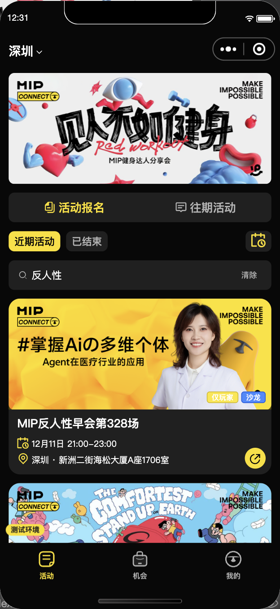

MIP · 重新按原型还原
2026-10-19 · 修改前 / 修改后 / mip-dev / Figma · 六角色素材已补齐；本次代码尚未重新上传微信
截图保留为历史证据；按用户决定不重做同状态对比。左两列为微信开发者工具 390×844 历史实拍。“修改后”记录前次修复代码，不含这次补齐的四枚角色图标；行业与活动的前后数据状态不完全相同，不能单凭这些图片认定同状态还原完成。未启用 figmaLayout 专用画稿分支，不用整页图片代替代码。示例头像/文案仅用于本地视觉对照，没有写入生产。测试库活动的真实服务端回读与实拍另列在下方。
第 3 列是 mip-dev 提交 cb5956b 的原型 HTML 渲染；10 月 19 日已核对远端仍为该提交。第 4 列是 Figma MIP Copy 的 8 月 25 日原始导出，在线版本是否之后更新仍未核实。本次新 Figma 仅确认六角色标签素材，其他页面仍保留上述历史参照。图片点开可看原尺寸；统一展示窗口只裁切网页预览，不修改原图。
个人资料 · 代表行业
修改后使用真实测试库 11 类/121 行业，选中广告营销；原型为局部目录示例。
前次截图所对应的调整：去掉额外的“填写信息＋代表行业”双标题；去掉手风琴外框和灰底，恢复原稿的大分组标题、黑底、较大选项、留白与底部操作。
人才合作 · 玩家列表
相同两个人物、头像、三标签、介绍、等级和邀请人；本组选择无 Banner 的列表状态。
前次截图所对应的调整：恢复狗策划/暴发户的完整矢量图标与黑黄分体标签；上区高度按原稿 86px，简介恢复 10px，搜索占位改为“搜索玩家名称”。
活动 · 卡片和标签
本轮修改后为真实测试库截图：已确认12月12日，只返回当天一场；修改前和参考稿为两场列表示例。保留真实标签、地址、时间和报名人数，不把原稿45人写入运行逻辑。
前次截图所对应的调整：移除标题下方新增的标签行；后台标签放回封面右下角，并与活动类型、资格标签去重。活动时间行补结束时间。
玩家会籍 · 会员状态
前后都是 Lv.2 玩家、3000 XP、4 个权益和同样任务，避免再把非会员问号箱子与玩家页比较。
前次截图所对应的调整：经验详情入口回到人物右上，调整主视觉比例和位置，保持皇冠完整；装饰弧线仍限制在视口内。
测试库新增：活动、封面、地址和 Banner

仅 mip_test；生产写入为 0。新增 2 场测试活动、3 个媒体资产、1 个 Banner、1 个活动类型、1 个后台标签及两条标签关联。原测试活动保留，无支付、会籍授权或通知发送。
| 内容 | 测试数据 |
|---|
| 顶部 Banner | 见人不如健身 · MIP健身达人分享会，使用原型原图内容。 |
| 第328场 | 掌握Aiの多维个体 / Agent在医疗行业的应用封面；北京时间 2026-12-12 10:00–12:00。 |
| 第329场 | 原型舒适脱口秀封面；北京时间 2026-12-19 10:00–12:00。 |
| 地址 | 深圳市福田区新洲二街海松大厦A座1706室；场地名包含新洲二街，列表也能看到。 |
| 角标 | 仅玩家 + 沙龙；后台配置标签“沙龙”与活动类型同名时只显示一次。 |
左侧是从真实测试服务端取数的页面实拍，使用“反人性”筛选定位新增活动。旧实拍按设备时区显示；本轮已修正为服务端北京时间，最新日期截图见下方功能复核；上方四列保留前次截图，数据状态差异见对应说明。没有伪造原稿里的 45 人报名。
测试数据和媒体回读记录
本轮复核：完整行业库、图标间距与功能正确性
行业有现成完整库：11 类 / 121 个可选行业。来自飞书 2026-09-26 revision 62 快照。此前比较样例只列 3 类，现已补齐测试库，并从真实服务端确认页面收到全部行业。生产历史目录没有改动。
互联网/AI 17 项，电子/通信/半导体 7 项，服务业 14 项，另含消费品、建筑、制造业、汽车、物流、能源、金融等。源字典存在美容/美发等语义交叉，保留原始 ID，未擅自合并。
查看完整 121 行业清单、来源与功能复核 · 服务业 14 项实拍 · 未选择日期实拍 · 测试库导入回读 · 本轮验证结果（全量已通过）
狗策划/暴发户黑底 icon 区恢复 16px、文字间隔 4px；日期入口恢复网格日历、4px 间隔并整块可点。日期先选后确认，未确认不筛选；默认不强行写“今天”。跨年活动保留年份，目录刷新不会卡在失效分类。另修复原有跨时区错误：活动时间和日历今天统一使用服务端北京时间，避免选12月12日却显示12月11日。
四列保留原始参照：第 2 列已更新本轮角色和日期实拍。行业第 2 列改用真实目录；活动第 2 列为确认12月12日后的真实服务端一场结果。数量不同于原型示例是功能状态差异；人才两人使用固定展示样例便于比较图标。
保留的产品规则与发现的问题
- 本版本导航已确认：用户核对下线历史后，确认本版本保持活动、机会、我的三个Tab；发现页属于下个版本，本次不恢复。旧原稿中的四个Tab不作为本版本验收要求。
- 会籍按状态展示：非会员问号箱子、会员续费窗口、审核中状态等已有后续确认，本轮保留；对比图统一选玩家状态。
- 原稿数字不一致：权益标题写“2项”却画4个图标，本组按4个真实展示槽计数，不复制错误数字。正式数据仍由后台决定。
- Banner 素材门槛：原型导出 702×298，小于后台既有 750×300 要求；测试 Banner 按比例输出为1053×447，未改画面或放宽生产校验。
- 原型两张卡都写328场：测试第二场改用329场和下一周时间，避免同名同日重复；这部分是测试延伸，不冒充原稿文字。
- 人才页 Banner：后续需求已确认人才/机会共用后台 Banner。上方人才对照选无 Banner 状态；有配置时仍按现有产品规则展示，不为旧图删掉运营能力。
行业选择确认前只改草稿，确定后才更新表单；返回取消保持原值。完整验证结果、运行时记录与证据边界见 验证 JSON。iPhone 真机手势由用户后续验收；前次开发版本 0.2.0.20261019.4 已上传，尚待用户选为体验版；本次图标补齐未重新上传，未发布正式版。
前次上传与生产处理记录 · 本次图标检查 · 待办与用户决定
上一轮报告与生产清理记录 · 来源与截图校验值